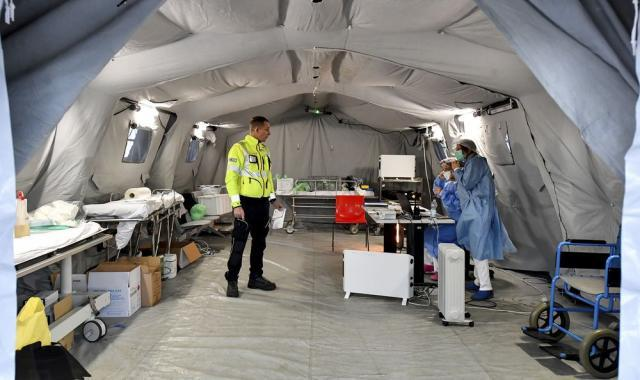

意大利疫情日记③：口罩和消毒液就这样解决了？
原文链接 备份链接 体坛周报全媒体驻意大利记者 王勤伯 （一） 保加利亚卢多戈雷茨欧联杯1/16决赛来米兰打客场，球员一路都戴着口罩，甚至在进入球场的时候也戴着，只有出场比赛没有戴。 空场比赛将是本周末意甲联赛的普遍景象。昨天发表在体坛 …
体坛周报全媒体驻意大利记者 王勤伯

（一）
意大利疫区的14天封城很快就要结束了。在疫区最严重的洛蒂市，急救医院的院长帕里亚接受了采访。以下是几个要点：
-造成多人感染的“1号病人”马蒂亚，在出现肺炎症状以后，医院就建议他留院观察，但他是个运动员，身体很棒，坚持要回家。由于他在2次检查中都否认有接触史，在整个意大利长时间只有3例输入型病例的情况下，医院没有对他测试试纸。直到他病情加重再次来到医院，住院治疗没有效果，第二天晚上转入重症病房时，一个麻醉师凭借直觉判断给他做了咽部试纸取样。（这个说法和此前媒体报道的说法有出入，当时是说他太太终于努力回忆起，马蒂亚曾和中国回来的一个朋友吃过饭）
-医院犯下的错误，是没有及时关闭急诊进行消毒、排查医护人员接触和采取隔离措施。同时，更多的试纸稍晚才送到，也错过了及时排查的时间。当地检察院曾对医院开启调查，但基本确认医护人员无责，他们只是未知病毒的受害者。
-洛蒂是最严重的疫区，目前洛蒂医院在物资和人手两方面还能基本对付（医护人员已经2周没回家），没有到需要外地支援的地步。作为一家小医院，现在每天需要处理的危重情形是20例，重症30例，每24小时有1-2名患者需要插管，20名患者需要协助呼吸，40人需要协助吸氧。
-洛蒂医院随时把数据分享给意大利其他医院，例如物资的消耗量，以方便其他医院进行准备。同时洛蒂医院也和武汉的中国同行建立了联系，交流治疗经验。
-现在疫区封城14天即将结束，未来几天将是伦巴第地区面临的最严峻考验，也必须继续采取严厉的措施。疫情爆发在米兰周边地区，例如洛蒂和贝尔加莫，如果发生在人口众多的米兰，医院负担将不堪想象。

（二）
意大利政府目前已经在上调防疫标准，例如建议大家不要握手，同时建议65岁以上老人尽量呆在家里。一些地区组织了为独自居家老人送餐、协助家政等服务。
如果疫情爆发，意大利全国会有不少军营立即成为“方舱医院”，用于无症状感染者和轻症患者的隔离。
疫情对于意大利媒体有怎样的改变？改变可真不小。
在“和平时期”，意大利的报纸焦点总是政治人物之间的争吵。各种攻击、讽刺你一句我一句飞来飞去。直到疫情在意大利爆发之前，这种情况一直没有改变，极右反对党领袖萨尔维尼抨击孔蒂没有暂停申根，大区事务部长博洽回应 “（散布恐慌的）萨尔维尼就是一个超级传播者”。与此同时，原本和执政的五星运动党、民主党联盟的前总理伦齐，不满孔蒂人气渐增，试图搞掉孔蒂。
疫情爆发后，伦齐仍在私下活动，萨尔维尼继续骂孔蒂骂欧盟，但他们都不敢提高声调，且也不得不把团结挂在嘴上，很快淡出报纸头条。包括总理孔蒂自己，也只能占据很少的版面。
媒体重要的位置、大篇幅都让位于各路专家。意大利国内知名的病毒学家、实验室负责人、医院负责人、医护协会负责人、康复患者、疫区居民成为主角。

我的感觉是，阅读疫情中的意大利媒体，比平时感觉舒服多了。
平时意大利媒体成天聚焦于意大利国内问题和政坛的争吵，基本上把一份报纸的国内时事部分读完，结论都是“这个国家快完蛋了”。
当然啦，如果真的完蛋了，不少意大利人也会庆祝，至少不觉得有什么大不了的。大千世界，有人从虚幻的繁盛里收获自豪与满足，有人在完蛋的边缘感到真实和超脱。
几年前美国模特艾米莉·瑞考夫斯基刚刚爆红，她的社交网页上挤满了意大利男性的留言，意大利媒体进行了收集，其中给我印象最深刻的一句即是：“救命，艾米莉，我们国家快完蛋了！”
这句留言，从某种程度上改变了我每次阅读意大利报纸之后的心情。
疫情步步进逼，政客们让出媒体半壁江山以后，阅读意国媒体却让人感觉心理格外踏实，没有众志成城，却别有一番沉着冷静。
例如，意大利是全世界最长寿的国家之一，过去对于这个事实，我并不特别在意。但现在我算是明白这不是偶然。意大利有很多贫困地区和人口，但他们的全民医疗体系确实出色（细节在之前的日记里已有介绍）。实际上，疫情爆发之前，大多数意大利人都不知道本国拥有很多优秀的病毒学家。
尽管是面对一种未知的病毒，意大利研发的咽部试纸检测技术质量相当出色。同时，意大利养不起那么多专职的研究人员，但无论是从最初的中国游客送诊还是意大利本土1号病人身上，罗马和米兰实验室“临时工合同”的女研究员很快就分离出了病毒。
意大利的防疫举措尽管是西欧最严厉的，启动了封城措施，但社会的自发组织、互助能力很强，没有因为疫情造成人道危机，一层一级的准备和动员并不缺乏条理。例如意大利的红十字会目前在做准备，一旦疫情扩大需要在军营建立方舱医院，意大利红十字会将承担基本护理、送餐等工作。
此外，我还想分享一个从个人经历里发掘出的小细节：意大利人对做饭这件事情有一种宗教式的虔诚，意大利医院的免费伙食，质量比较暖心。

（三）
不少读者朋友希望我评论国际米兰主席张康阳痛骂意甲联盟主席达尔皮诺的事情。
这件事的起因是疫情导致意甲调整赛程，我就放在疫情日记里给大家做个解答。
具体的骂战内容，大家可参看体坛加app上我的同事们撰写的国际米兰相关稿件，再复述过分冗长，以下是个人观察。
张康阳担任国际米兰主席以来，从未卷入过意大利足坛内部争吵，更别说发飙。
可是，意大利足球就是个戏台子，吵架能让你以最便宜的成本攻占头条。莫拉蒂的人品大家都称道，但莫拉蒂也爱吵，吵得很艺术。莫拉蒂是记者们的最爱，他每次说话都能贡献金句头条。
如果苏宁打算在意甲长期立足，张康阳作为国际米兰主席卷入骂战是迟早的事情。这次发飙算是处子秀，带着一点年轻人的冲动和毛躁。效果当然不理想，被足协检察官调查，被著名记者门塔纳这样有代表性和影响力的资深蓝黑球迷严厉批评，仅仅得到因种族主义问题而臭名昭著的北看台极端球迷支持——这种支持对于主席身份的张康阳更是有害的。
然而，要吵架，就不能患得患失，害怕说错话，就永远不知道怎么说话。国际米兰需要张康阳更多走到前台才能实现和其他俱乐部老板们的平等对话，也需要张康阳更有勇气地发表言论。
但张康阳需要明白，在拉丁国家，俏皮话是生活的氧气，是老百姓茶余饭后的甜点，他需要钻研语言的艺术，把金句头条馈赠给意大利媒体，一边抨击嘲弄敌人，一边凭借幽默风趣赢得人气。当年那不勒斯主席德劳伦蒂斯骂意甲联盟主席贝雷塔，说他被拉齐奥老板洛蒂托用狗绳儿牵着，形象逼真，效果绝佳，多年后仍被人们牢记。
国际米兰的境遇比较独特。“电话门”给很多人留下了一个印象，认为意甲是尤文图斯和国际米兰死对头对着干，这次的争议也是围绕尤文图斯-国际米兰补赛时间。
实际上尤文图斯和国际米兰当下的敌人是一致的：洛蒂托。
洛蒂托在自己亲手扶持的足协主席塔维奇奥倒台以后，曾有过一段低落。但此人手段了得，过去大半年，他卷土重来，联合众多中小俱乐部在意甲联盟选出一个受他完全操控的主席。
同时，洛蒂托看准了尤文图斯本赛季的衰落，拉齐奥突然发力，放弃杯赛专攻联赛——本赛季曾被视作国际米兰挑战尤文图斯的赛季，现在看，国际米兰和拉齐奥谁能把握住尤文衰落的机遇，是被隐藏的悬念。
意甲联盟将为疫情期间的赛程修改进行投票，很可能支持国际米兰意见的俱乐部极少，甚至不排除最后1个也没有。从上周到现在，国际米兰管理层从马罗塔到张康阳先后发火，背景其实是这双小鞋穿定了。
争斗未来还会持续下去。洛蒂托的最终方案是意甲复制英超式的转播权分配，均分一部分，按成绩分剩余部分，这样尤文图斯和国际米兰的电视转播收入会进一步减少。
洛蒂托是个格外善变的人，愿意跟他结盟，他会立即冰释前嫌笑容可掬，但是国际米兰和他结盟等于反对自己的未来，和尤文图斯结盟等于反对自己的过去——不结盟，就是形单影只的现在。
这涉及到苏宁对国际米兰的长久投资是否值得，联赛环境如此被人操控，真的让人相信意甲已经完蛋了——不过想想意甲历史上那些经典的骂战和丑闻，过去的联赛环境难道又比今天更好？
所以，意甲是否让人感觉已经完蛋，也不是什么大不了的问题。生活需要继续，生活需要骂战，生活需要金句。
原文链接 备份链接 体坛周报全媒体驻意大利记者 王勤伯 （一） 保加利亚卢多戈雷茨欧联杯1/16决赛来米兰打客场，球员一路都戴着口罩，甚至在进入球场的时候也戴着，只有出场比赛没有戴。 空场比赛将是本周末意甲联赛的普遍景象。昨天发表在体坛 …
原文链接 备份链接 新冠肺炎疫情期间，少出门、勤洗手、戴口罩已经深深地刻在国人脑子里。不过，在疫情逐渐扩散的欧洲，戴口罩的反而成为异类，可能被“歧视”。 女议员因戴口罩被赶出议会大厅 根据当地时间3月3日18时意大利卫生部公布的最近数据， …
原文链接 备份链接 作为一家改制后的非公医院，汉阳医院在武汉疫情中所面临的考验更为严峻。 在承担大量救治工作之后，医疗防护物资没有得到政府正规渠道下拨的保障。有一天，20个医生一个口罩也没有。 与公立医院一样，非公医院一样面对疫情， …
原文链接 备份链接 *************▲*************春天来了，学校门前的路却空空荡荡。 （沉白白/图） 全文共4034字，阅读大约需要7分钟。 威尼托大区本周关闭了学校，却没有要求大家在家隔离。看着窗外三三两两去踢 …
原文链接 备份链接 视觉中国 记者：王磬 “ 欧洲目前正进入病例激增时期，也正面临诸多与中国疫情爆发初期相似的挑战。 ” 随着新冠疫情在欧洲蔓延，多国纷纷出现口罩短缺。2月29日，法国政府宣布，口罩将被列入处方药。药店不得把口罩卖给没有出 …